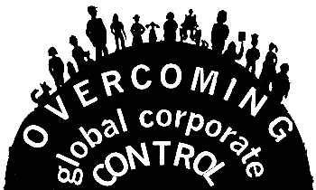

FOURTH ANNUAL SOLIDARITY DAY
Saturday, October 27, 2001, 10 AM to Midnight
St. Philips Church, 365 Turner Road, Auburn (Rt. 4)
Join Carolyn Chute, Tammy Greaton, John McClendon,
Lucy Poulin, Charles Scontras, Jose Soto
and many, many more...

CELEBRATE OUR COLLECTIVE WORK
CONNECT GLOBAL AND LOCAL ISSUES
LEARN FROM EACH OTHER
ORGANIZE TO END CORPORATE CONTROL OF OUR LIVES
CREATE A JUST, SUSTAINABLE, DEMOCRATIC FUTURE
|
A BRINGABLE FEAST Bring your dancing shoes Bring a blank t-shirt. Bring your passion for justice. If it's convenient, bring a cold potluck to share. If you are part of a group, bring information to display FREE-FREE-FREE-FREE-FREE-FREE-FREE-FREE EVENT FLOW
TENTATIVE SCHEDULE
Free Child Care Available
|